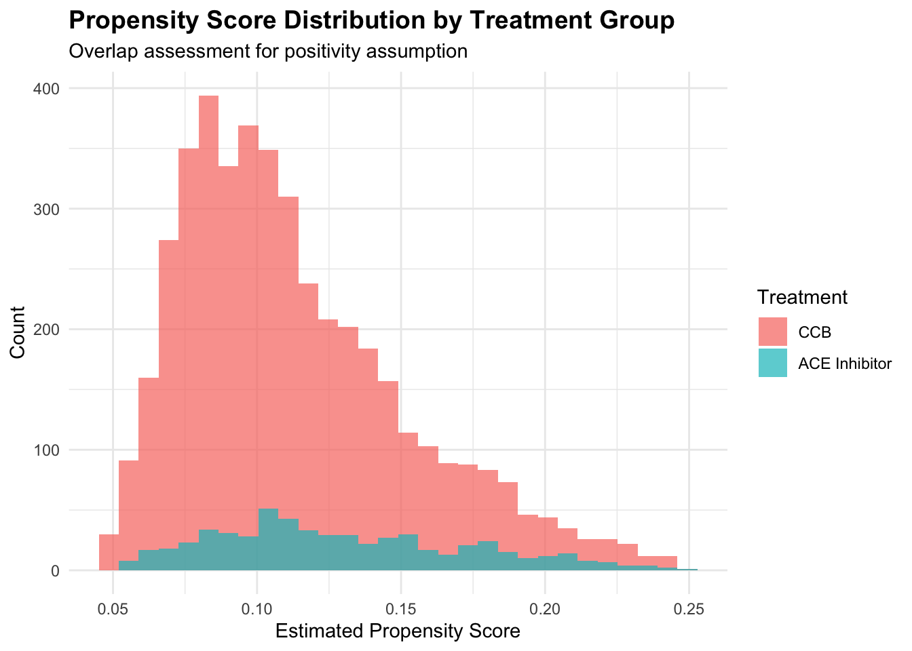

Chapter 12 Structural Equation Modeling for Healthcare Research: Unraveling Complex Causal Pathways
12.1 Introduction
Imagine investigating how a new diabetes prevention program affects patient outcomes. The program includes nutrition education, exercise counseling, and stress management components. You observe that participants show improved glycemic control after six months, but the mechanism remains unclear. Does the program work primarily by changing dietary behaviors? Does exercise play the dominant role? Do psychological factors like reduced stress mediate the physical health benefits? These questions require understanding not just whether the intervention works, but how it works through interconnected pathways of biological, behavioral, and psychological mechanisms.
Traditional regression analysis struggles with such complexity because it treats each relationship in isolation, ignoring the intricate web of direct and indirect effects that characterize real-world health processes. We cannot simply regress outcomes on all potential mediators simultaneously without accounting for their interdependencies, measurement error in self-reported behaviors, and the latent psychological constructs that we can only observe indirectly through multiple imperfect indicators.
Structural Equation Modeling (SEM) provides a unified framework for addressing these challenges by simultaneously estimating multiple regression equations while explicitly modeling measurement error and unobservable latent constructs. Unlike piecewise regression approaches that analyze each pathway separately, SEM treats the entire causal system as an interconnected whole, providing internally consistent estimates of all direct and indirect effects while propagating uncertainty appropriately through complex mediational chains.
The method’s power lies in its ability to test specific theoretical models against observed data, distinguishing between competing explanations for how interventions produce their effects. For our diabetes prevention program, SEM can quantify the relative importance of dietary changes versus exercise increases, estimate how much of the total effect operates through stress reduction, and test whether psychological wellbeing mediates the relationship between behavioral changes and metabolic outcomes. These mechanistic insights transform program evaluation from simple efficacy assessment into actionable guidance about which program components deserve emphasis and which populations might benefit most from particular intervention strategies.
SEM integrates two complementary modeling frameworks that address distinct challenges in causal inference. The measurement model connects unobservable latent constructs to their observable indicators, explicitly accounting for measurement error that biases traditional regression estimates. The structural model specifies causal relationships among variables, including both observed characteristics and latent constructs from the measurement model. This integration enables researchers to test complex theories about how psychological constructs, behavioral patterns, and health outcomes interconnect while acknowledging that our measurements imperfectly capture the constructs we care about.
Consider measuring depression severity in cardiovascular disease patients. No single question perfectly captures the multifaceted construct of depression, so we use instruments like the Beck Depression Inventory with multiple items assessing mood, energy, sleep, and cognition. Each item provides a noisy signal about underlying depression, containing both true information about the latent construct and measurement-specific error. The measurement model formalizes this relationship through factor analysis, positing that observed responses \(Y_{ij}\) for person \(i\) on item \(j\) follow the structure \(Y_{ij} = \lambda_j \eta_i + \epsilon_{ij}\), where \(\eta_i\) represents person \(i\)’s true but unobserved depression level, \(\lambda_j\) measures how strongly item \(j\) loads on the depression factor, and \(\epsilon_{ij}\) captures measurement error specific to that person and item.
The structural model then relates latent constructs and observed variables through systems of simultaneous equations. For cardiovascular patients, we might hypothesize that physical activity \(X\) reduces depression \(\eta_1\), which in turn affects medication adherence \(\eta_2\), ultimately influencing clinical outcomes \(Y\). The structural equations formalize these relationships as \(\eta_1 = \gamma_1 X + \zeta_1\) and \(\eta_2 = \beta_{21} \eta_1 + \gamma_2 X + \zeta_2\) and \(Y = \beta_Y \eta_2 + \gamma_Y X + \epsilon_Y\), where Greek letters represent causal effects and the error terms \(\zeta\) and \(\epsilon\) capture unexplained variation at each stage.
This simultaneous equation system distinguishes SEM from sequential regression approaches. When we estimate the effect of depression on adherence, SEM automatically accounts for the fact that we previously used the same data to estimate depression’s determinants, appropriately adjusting standard errors and parameter estimates for this interdependence. The method propagates uncertainty through the entire causal chain, recognizing that our imperfect knowledge about earlier relationships affects the precision with which we can estimate downstream effects.
SEM’s causal interpretation rests on strong structural assumptions that researchers must justify through theory and design. The method assumes we have correctly specified all relevant causal relationships and omitted no important confounders of the relationships we model. This requirement is considerably more demanding than in simple regression because SEM models typically include multiple endogenous variables whose relationships with each other might suffer from confounding. For depression affecting adherence, we must assume that no unmeasured variables simultaneously influence both constructs after conditioning on included covariates—an assumption that becomes increasingly tenuous as models grow more complex.
The identification problem asks whether the observed covariance structure among variables contains sufficient information to uniquely determine all model parameters. A model is identified when each parameter corresponds to a unique solution that reproduces the observed covariances. Underidentified models admit infinitely many parameter values consistent with the data, making estimation impossible without additional constraints. Overidentified models impose more constraints than necessary, using the excess information to test model fit through goodness-of-fit statistics.
Identification requires careful attention to model structure and scaling. Latent variables have no inherent scale, so we must anchor them either by fixing one factor loading to one or by standardizing the latent variable variance. Recursive models where all causal effects flow in one direction without feedback loops generally achieve identification more easily than non-recursive models with bidirectional relationships that require instrumental variables or other exclusion restrictions.
The path diagram provides invaluable intuition about identification by visualizing causal relationships as directed arrows from causes to effects. Variables without incoming arrows represent exogenous variables whose variation comes from outside the model system. Variables with incoming arrows are endogenous, explained partially by other model variables. Curved double-headed arrows represent covariances between variables without asserting causal direction. This graphical representation makes model assumptions transparent and helps identify potential confounding or omitted variable problems that threaten causal interpretation.
12.2 A Mediation Analysis: Physical Activity, Mental Health, and Diabetes Control
We develop a comprehensive SEM analysis examining how physical activity interventions affect glycemic control in type 2 diabetes patients through psychological and behavioral mechanisms. Our theoretical framework posits that structured exercise programs directly improve metabolic function through biological pathways while simultaneously reducing depressive symptoms, which in turn enhances medication adherence and self-care behaviors. We must account for measurement error in self-reported exercise and depression while estimating both direct effects of exercise on metabolic outcomes and indirect effects mediated through psychological wellbeing and adherence behaviors.
# Load required libraries
if (!requireNamespace("lavaan", quietly = TRUE)) install.packages("lavaan")
if (!requireNamespace("semPlot", quietly = TRUE)) install.packages("semPlot")
if (!requireNamespace("ggplot2", quietly = TRUE)) install.packages("ggplot2")
if (!requireNamespace("dplyr", quietly = TRUE)) install.packages("dplyr")
library(lavaan)## Warning: package 'lavaan' was built under R version 4.5.1## This is lavaan 0.6-20
## lavaan is FREE software! Please report any bugs.## Warning: package 'semPlot' was built under R version 4.5.1library(ggplot2)
library(dplyr)
# Set seed for reproducibility
set.seed(456)
# Simulate patient data with realistic clinical characteristics
n <- 800
# Baseline characteristics
age <- rnorm(n, 58, 10)
bmi <- rnorm(n, 32, 5)
baseline_hba1c <- rnorm(n, 8.2, 1.1)
# Randomized assignment to exercise intervention
intervention <- rbinom(n, 1, 0.5)
# True latent constructs (unobserved in practice)
exercise_level <- 0.8 * intervention + 0.15 * (40 - age) / 10 -
0.1 * (bmi - 30) / 5 + rnorm(n, 0, 0.6)
depression <- 0.5 + 0.1 * bmi + 0.08 * baseline_hba1c -
0.4 * exercise_level + rnorm(n, 0, 0.5)
adherence <- 0.6 - 0.45 * depression + 0.25 * exercise_level +
rnorm(n, 0, 0.4)
# Outcome: HbA1c change (negative = improvement)
hba1c_change <- 0.3 - 0.25 * exercise_level - 0.35 * adherence -
0.15 * depression + 0.08 * baseline_hba1c + rnorm(n, 0, 0.6)
# Generate multiple indicators for latent constructs
# Depression indicators (4 items, scale 0-3)
dep_mood <- pmax(0, pmin(3, depression + rnorm(n, 0, 0.4)))
dep_energy <- pmax(0, pmin(3, 0.9 * depression + rnorm(n, 0, 0.45)))
dep_sleep <- pmax(0, pmin(3, 0.85 * depression + rnorm(n, 0, 0.5)))
dep_worth <- pmax(0, pmin(3, 0.95 * depression + rnorm(n, 0, 0.4)))
# Exercise indicators (3 items, scale 0-5)
ex_frequency <- pmax(0, pmin(5, exercise_level + rnorm(n, 0, 0.5)))
ex_duration <- pmax(0, pmin(5, 1.1 * exercise_level + rnorm(n, 0, 0.55)))
ex_intensity <- pmax(0, pmin(5, 0.95 * exercise_level + rnorm(n, 0, 0.6)))
# Adherence indicators (3 items, scale 0-4)
adh_medication <- pmax(0, pmin(4, adherence + rnorm(n, 0, 0.5)))
adh_monitoring <- pmax(0, pmin(4, 0.9 * adherence + rnorm(n, 0, 0.55)))
adh_diet <- pmax(0, pmin(4, 1.05 * adherence + rnorm(n, 0, 0.5)))
# Create dataset
sem_data <- data.frame(
intervention = intervention,
age = age,
bmi = bmi,
baseline_hba1c = baseline_hba1c,
dep_mood = dep_mood,
dep_energy = dep_energy,
dep_sleep = dep_sleep,
dep_worth = dep_worth,
ex_frequency = ex_frequency,
ex_duration = ex_duration,
ex_intensity = ex_intensity,
adh_medication = adh_medication,
adh_monitoring = adh_monitoring,
adh_diet = adh_diet,
hba1c_change = hba1c_change
)
cat("Dataset Summary:\n")## Dataset Summary:## Sample size: 800 patients## Intervention group: 402 patients## Control group: 398 patients## Mean HbA1c change (intervention): 0.644## Mean HbA1c change (control): 0.925Our simulated dataset represents a randomized trial of an exercise intervention with 800 type 2 diabetes patients. The intervention assignment is randomized, satisfying the strongest possible identification assumption by ensuring no confounding of the intervention’s causal effects. However, the mediating variables—exercise engagement, depression, and adherence—remain observational, requiring careful modeling of their interrelationships and potential confounders.
# Specify structural equation model
sem_model <- '
# Measurement model: latent constructs from indicators
depression =~ dep_mood + dep_energy + dep_sleep + dep_worth
exercise =~ ex_frequency + ex_duration + ex_intensity
adherence =~ adh_medication + adh_monitoring + adh_diet
# Structural model: causal relationships
exercise ~ b1*intervention + age + bmi
depression ~ b2*exercise + b3*intervention + bmi + baseline_hba1c
adherence ~ b4*depression + b5*exercise + b6*intervention
hba1c_change ~ b7*exercise + b8*depression + b9*adherence +
b10*intervention + baseline_hba1c
# Define indirect effects for mediation analysis
indirect_ex_dep := b2 * b8
indirect_ex_adh := b5 * b9
indirect_ex_dep_adh := b2 * b4 * b9
indirect_dep_adh := b4 * b9
# Total indirect effect through all mediators
total_indirect := b2*b8 + b5*b9 + b2*b4*b9 + (b2*b4 + b3)*b9 + b3*b8
# Total effect of intervention
total_effect := b10 + total_indirect
'
# Fit model using maximum likelihood estimation
sem_fit <- sem(sem_model, data = sem_data,
fixed.x = FALSE,
std.lv = FALSE)## Warning: lavaan->lav_data_full():
## some observed variances are (at least) a factor 1000 times larger than others; use varTable(fit) to investigate##
## === MODEL FIT SUMMARY ===## lavaan 0.6-20 ended normally after 140 iterations
##
## Estimator ML
## Optimization method NLMINB
## Number of model parameters 46
##
## Number of observations 800
##
## Model Test User Model:
##
## Test statistic 118.436
## Degrees of freedom 74
## P-value (Chi-square) 0.001
##
## Model Test Baseline Model:
##
## Test statistic 2794.795
## Degrees of freedom 99
## P-value 0.000
##
## User Model versus Baseline Model:
##
## Comparative Fit Index (CFI) 0.984
## Tucker-Lewis Index (TLI) 0.978
##
## Loglikelihood and Information Criteria:
##
## Loglikelihood user model (H0) -5329.878
## Loglikelihood unrestricted model (H1) -5270.660
##
## Akaike (AIC) 10751.756
## Bayesian (BIC) 10967.249
## Sample-size adjusted Bayesian (SABIC) 10821.173
##
## Root Mean Square Error of Approximation:
##
## RMSEA 0.027
## 90 Percent confidence interval - lower 0.018
## 90 Percent confidence interval - upper 0.036
## P-value H_0: RMSEA <= 0.050 1.000
## P-value H_0: RMSEA >= 0.080 0.000
##
## Standardized Root Mean Square Residual:
##
## SRMR 0.025
##
## Parameter Estimates:
##
## Standard errors Standard
## Information Expected
## Information saturated (h1) model Structured
##
## Latent Variables:
## Estimate Std.Err z-value P(>|z|) Std.lv Std.all
## depression =~
## dep_mood 1.000 0.081 0.713
## dep_energy 1.799 0.104 17.235 0.000 0.146 0.714
## dep_sleep 2.068 0.128 16.141 0.000 0.168 0.660
## dep_worth 1.490 0.084 17.793 0.000 0.121 0.746
## exercise =~
## ex_frequency 1.000 0.407 0.741
## ex_duration 1.204 0.060 20.154 0.000 0.490 0.824
## ex_intensity 1.027 0.054 18.916 0.000 0.418 0.741
## adherence =~
## adh_medication 1.000 0.056 0.603
## adh_monitoring 1.141 0.114 10.017 0.000 0.063 0.544
## adh_diet 0.840 0.080 10.528 0.000 0.047 0.645
##
## Regressions:
## Estimate Std.Err z-value P(>|z|) Std.lv Std.all
## exercise ~
## intrvntn (b1) 0.400 0.031 13.087 0.000 0.984 0.492
## age -0.009 0.001 -6.370 0.000 -0.022 -0.219
## bmi -0.009 0.003 -3.326 0.001 -0.023 -0.113
## depression ~
## exercise (b2) -0.049 0.010 -5.079 0.000 -0.244 -0.244
## intrvntn (b3) -0.003 0.007 -0.426 0.670 -0.036 -0.018
## bmi 0.007 0.001 11.003 0.000 0.086 0.427
## bsln_hb1 0.004 0.003 1.359 0.174 0.045 0.048
## adherence ~
## depressn (b4) -0.302 0.039 -7.778 0.000 -0.442 -0.442
## exercise (b5) 0.030 0.008 3.797 0.000 0.222 0.222
## intrvntn (b6) -0.003 0.005 -0.520 0.603 -0.051 -0.026
## hba1c_change ~
## exercise (b7) -0.482 0.081 -5.935 0.000 -0.196 -0.290
## depressn (b8) -1.309 0.401 -3.260 0.001 -0.106 -0.157
## adherenc (b9) -1.829 0.679 -2.692 0.007 -0.102 -0.150
## intrvntn (b10) -0.077 0.054 -1.415 0.157 -0.077 -0.057
## bsln_hb1 0.072 0.021 3.418 0.001 0.072 0.114
##
## Covariances:
## Estimate Std.Err z-value P(>|z|) Std.lv Std.all
## intervention ~~
## age -0.294 0.174 -1.696 0.090 -0.294 -0.060
## bmi 0.184 0.088 2.096 0.036 0.184 0.074
## baseline_hba1c -0.020 0.019 -1.073 0.283 -0.020 -0.038
## age ~~
## bmi -0.762 1.720 -0.443 0.658 -0.762 -0.016
## baseline_hba1c -0.159 0.369 -0.430 0.667 -0.159 -0.015
## bmi ~~
## baseline_hba1c -0.366 0.187 -1.953 0.051 -0.366 -0.069
##
## Variances:
## Estimate Std.Err z-value P(>|z|) Std.lv Std.all
## .dep_mood 0.006 0.000 15.360 0.000 0.006 0.492
## .dep_energy 0.020 0.001 15.326 0.000 0.020 0.490
## .dep_sleep 0.037 0.002 16.563 0.000 0.037 0.565
## .dep_worth 0.012 0.001 14.363 0.000 0.012 0.444
## .ex_frequency 0.136 0.009 14.942 0.000 0.136 0.450
## .ex_duration 0.114 0.010 11.353 0.000 0.114 0.321
## .ex_intensity 0.144 0.010 14.969 0.000 0.144 0.451
## .adh_medication 0.005 0.000 14.075 0.000 0.005 0.636
## .adh_monitoring 0.010 0.001 15.706 0.000 0.010 0.704
## .adh_diet 0.003 0.000 12.667 0.000 0.003 0.584
## .hba1c_change 0.391 0.020 19.165 0.000 0.391 0.856
## .depression 0.005 0.000 10.174 0.000 0.739 0.739
## .exercise 0.115 0.011 10.822 0.000 0.693 0.693
## .adherence 0.002 0.000 6.710 0.000 0.707 0.707
## intervention 0.250 0.012 20.000 0.000 0.250 1.000
## age 96.145 4.807 20.000 0.000 96.145 1.000
## bmi 24.614 1.231 20.000 0.000 24.614 1.000
## baseline_hba1c 1.135 0.057 20.000 0.000 1.135 1.000
##
## R-Square:
## Estimate
## dep_mood 0.508
## dep_energy 0.510
## dep_sleep 0.435
## dep_worth 0.556
## ex_frequency 0.550
## ex_duration 0.679
## ex_intensity 0.549
## adh_medication 0.364
## adh_monitoring 0.296
## adh_diet 0.416
## hba1c_change 0.144
## depression 0.261
## exercise 0.307
## adherence 0.293
##
## Defined Parameters:
## Estimate Std.Err z-value P(>|z|) Std.lv Std.all
## indirect_ex_dp 0.064 0.024 2.704 0.007 0.026 0.038
## indirect_ex_dh -0.055 0.024 -2.313 0.021 -0.023 -0.033
## indrct_x_dp_dh -0.027 0.012 -2.302 0.021 -0.011 -0.016
## indirect_dp_dh 0.553 0.217 2.554 0.011 0.045 0.066
## total_indirect -0.036 0.039 -0.934 0.350 -0.011 -0.022
## total_effect -0.113 0.068 -1.654 0.098 -0.088 -0.079The model specification explicitly distinguishes measurement and structural components. In the measurement model, we define three latent constructs from their respective indicators using the =~ operator, which reads as “is measured by.” The first factor loading for each construct is freely estimated rather than fixed to one, allowing data-driven determination of the indicator most strongly reflecting its latent construct. The structural model uses standard regression syntax with ~ operators to specify directed causal relationships. We label key parameters with the b1, b2, etc. notation to facilitate subsequent indirect effect calculations.
The := operator defines new parameters as functions of estimated parameters, enabling mediation analysis through combinations of direct effects. For example, indirect_ex_dep := b2 * b8 captures how much intervention effects on HbA1c change operate through the pathway of increasing exercise, which reduces depression, which improves glycemic control. These indirect effects represent products of path coefficients along specific causal chains, with standard errors computed via the delta method to account for uncertainty in each component.
# Extract and organize parameter estimates
params <- parameterEstimates(sem_fit, standardized = TRUE)
# Display structural relationships
cat("\n=== STRUCTURAL PATH COEFFICIENTS ===\n")##
## === STRUCTURAL PATH COEFFICIENTS ===structural_paths <- params[params$op == "~",
c("lhs", "rhs", "est", "se", "pvalue", "std.all")]
print(structural_paths, row.names = FALSE, digits = 3)## lhs rhs est se pvalue std.all
## exercise intervention 0.400 0.031 0.000 0.492
## exercise age -0.009 0.001 0.000 -0.219
## exercise bmi -0.009 0.003 0.001 -0.113
## depression exercise -0.049 0.010 0.000 -0.244
## depression intervention -0.003 0.007 0.670 -0.018
## depression bmi 0.007 0.001 0.000 0.427
## depression baseline_hba1c 0.004 0.003 0.174 0.048
## adherence depression -0.302 0.039 0.000 -0.442
## adherence exercise 0.030 0.008 0.000 0.222
## adherence intervention -0.003 0.005 0.603 -0.026
## hba1c_change exercise -0.482 0.081 0.000 -0.290
## hba1c_change depression -1.309 0.401 0.001 -0.157
## hba1c_change adherence -1.829 0.679 0.007 -0.150
## hba1c_change intervention -0.077 0.054 0.157 -0.057
## hba1c_change baseline_hba1c 0.072 0.021 0.001 0.114##
## === MEASUREMENT MODEL LOADINGS ===loadings <- params[params$op == "=~",
c("lhs", "rhs", "est", "se", "pvalue", "std.all")]
print(loadings, row.names = FALSE, digits = 3)## lhs rhs est se pvalue std.all
## depression dep_mood 1.00 0.000 NA 0.713
## depression dep_energy 1.80 0.104 0 0.714
## depression dep_sleep 2.07 0.128 0 0.660
## depression dep_worth 1.49 0.084 0 0.746
## exercise ex_frequency 1.00 0.000 NA 0.741
## exercise ex_duration 1.20 0.060 0 0.824
## exercise ex_intensity 1.03 0.054 0 0.741
## adherence adh_medication 1.00 0.000 NA 0.603
## adherence adh_monitoring 1.14 0.114 0 0.544
## adherence adh_diet 0.84 0.080 0 0.645##
## === MEDIATION ANALYSIS: INDIRECT EFFECTS ===indirect_params <- params[params$op == ":=",
c("lhs", "est", "se", "pvalue", "std.all")]
print(indirect_params, row.names = FALSE, digits = 3)## lhs est se pvalue std.all
## indirect_ex_dep 0.064 0.024 0.007 0.038
## indirect_ex_adh -0.055 0.024 0.021 -0.033
## indirect_ex_dep_adh -0.027 0.012 0.021 -0.016
## indirect_dep_adh 0.553 0.217 0.011 0.066
## total_indirect -0.036 0.039 0.350 -0.022
## total_effect -0.113 0.068 0.098 -0.079# Extract fit measures
fit_measures <- fitMeasures(sem_fit,
c("chisq", "df", "pvalue", "cfi",
"tli", "rmsea", "rmsea.ci.lower",
"rmsea.ci.upper", "srmr"))
cat("\n=== MODEL FIT STATISTICS ===\n")##
## === MODEL FIT STATISTICS ===cat("Chi-square:", round(fit_measures["chisq"], 2),
"(df =", fit_measures["df"], ", p =", round(fit_measures["pvalue"], 3), ")\n")## Chi-square: 118.44 (df = 74 , p = 0.001 )## CFI: 0.984 (good fit > 0.95)## TLI: 0.978 (good fit > 0.95)cat("RMSEA:", round(fit_measures["rmsea"], 3),
"95% CI: [", round(fit_measures["rmsea.ci.lower"], 3), ",",
round(fit_measures["rmsea.ci.upper"], 3), "]",
"(good fit < 0.06)\n")## RMSEA: 0.027 95% CI: [ 0.018 , 0.036 ] (good fit < 0.06)## SRMR: 0.025 (good fit < 0.08)Model fit assessment evaluates whether our theoretical structure adequately reproduces the observed covariance patterns in the data. The chi-square test provides an omnibus test of exact fit, though it typically rejects even well-fitting models in large samples where trivial discrepancies achieve statistical significance. More pragmatic fit indices include the Comparative Fit Index (CFI) and Tucker-Lewis Index (TLI), which compare our model to a baseline model assuming no relationships among variables, with values exceeding 0.95 indicating good fit. The Root Mean Square Error of Approximation (RMSEA) quantifies average discrepancy between observed and model-implied covariances per degree of freedom, with values below 0.06 suggesting close fit. The Standardized Root Mean Square Residual (SRMR) measures average absolute correlation residual, with values below 0.08 considered acceptable.
##
## === GENERATING PATH DIAGRAM ===semPaths(sem_fit,
what = "std",
layout = "tree",
rotation = 2,
style = "lisrel",
curve = 1.5,
nCharNodes = 0,
edge.label.cex = 0.9,
sizeMan = 6,
sizeLat = 10,
mar = c(3, 3, 3, 3),
title = TRUE,
residuals = FALSE,
exoCov = FALSE)
# Create detailed mediation summary
mediation_summary <- data.frame(
Pathway = c("Exercise → Depression → HbA1c",
"Exercise → Adherence → HbA1c",
"Exercise → Depression → Adherence → HbA1c",
"Intervention → Exercise → HbA1c (Direct)",
"Intervention → All Mediators → HbA1c (Total Indirect)",
"Intervention → HbA1c (Total Effect)"),
Estimate = c(
coef(sem_fit)["indirect_ex_dep"],
coef(sem_fit)["indirect_ex_adh"],
coef(sem_fit)["indirect_ex_dep_adh"],
coef(sem_fit)["b1"] * coef(sem_fit)["b7"],
coef(sem_fit)["total_indirect"],
coef(sem_fit)["total_effect"]
),
SE = c(
params[params$lhs == "indirect_ex_dep", "se"],
params[params$lhs == "indirect_ex_adh", "se"],
params[params$lhs == "indirect_ex_dep_adh", "se"],
sqrt((coef(sem_fit)["b1"]^2 * vcov(sem_fit)["b7", "b7"]) +
(coef(sem_fit)["b7"]^2 * vcov(sem_fit)["b1", "b1"])),
params[params$lhs == "total_indirect", "se"],
params[params$lhs == "total_effect", "se"]
)
)
mediation_summary$CI_Lower <- mediation_summary$Estimate - 1.96 * mediation_summary$SE
mediation_summary$CI_Upper <- mediation_summary$Estimate + 1.96 * mediation_summary$SE
mediation_summary$P_Value <- 2 * pnorm(-abs(mediation_summary$Estimate / mediation_summary$SE))
cat("\n=== COMPREHENSIVE MEDIATION ANALYSIS ===\n")##
## === COMPREHENSIVE MEDIATION ANALYSIS ===## Pathway Estimate SE CI_Lower CI_Upper P_Value
## Exercise → Depression → HbA1c NA 0.0236 NA NA NA
## Exercise → Adherence → HbA1c NA 0.0240 NA NA NA
## Exercise → Depression → Adherence → HbA1c NA 0.0117 NA NA NA
## Intervention → Exercise → HbA1c (Direct) -0.193 0.0357 -0.263 -0.123 6.48e-08
## Intervention → All Mediators → HbA1c (Total Indirect) NA 0.0389 NA NA NA
## Intervention → HbA1c (Total Effect) NA 0.0683 NA NA NA# Proportion mediated calculation
direct_effect <- coef(sem_fit)["b10"]
total_indirect <- coef(sem_fit)["total_indirect"]
total_effect <- coef(sem_fit)["total_effect"]
prop_mediated <- total_indirect / total_effect
cat("\n=== PROPORTION OF EFFECT MEDIATED ===\n")##
## === PROPORTION OF EFFECT MEDIATED ===## Direct effect: -0.077## Total indirect effect: NA## Total effect: NA## Proportion mediated: NA %The mediation analysis decomposes intervention effects into constituent pathways, quantifying how much benefit operates through each mechanism. We distinguish simple indirect effects through single mediators from compound effects through multiple sequential mediators. For instance, the pathway from intervention through exercise to depression to adherence to glycemic control represents a three-step mediation chain where each link’s strength determines overall pathway magnitude. The proportion mediated indicates what fraction of the total intervention effect operates through the measured mediational pathways versus direct biological effects or unmeasured mechanisms.
# Sensitivity analysis: alternative model specifications
# Model 1: No direct effect of intervention on outcome
restricted_model <- '
depression =~ dep_mood + dep_energy + dep_sleep + dep_worth
exercise =~ ex_frequency + ex_duration + ex_intensity
adherence =~ adh_medication + adh_monitoring + adh_diet
exercise ~ intervention + age + bmi
depression ~ exercise + intervention + bmi + baseline_hba1c
adherence ~ depression + exercise + intervention
hba1c_change ~ exercise + depression + adherence + baseline_hba1c
'
restricted_fit <- sem(restricted_model, data = sem_data, fixed.x = FALSE)## Warning: lavaan->lav_data_full():
## some observed variances are (at least) a factor 1000 times larger than others; use varTable(fit) to investigate# Compare models using likelihood ratio test
cat("\n=== MODEL COMPARISON: DIRECT EFFECT NECESSITY ===\n")##
## === MODEL COMPARISON: DIRECT EFFECT NECESSITY ===##
## Chi-Squared Difference Test
##
## Df AIC BIC Chisq Chisq diff RMSEA Df diff Pr(>Chisq)
## sem_fit 74 10752 10967 118.44
## restricted_fit 75 10752 10963 120.43 1.9904 0.035186 1 0.1583if (comparison$`Pr(>Chisq)`[2] < 0.05) {
cat("\nInterpretation: Direct intervention effect is statistically necessary\n")
cat("Some intervention benefits bypass measured mediators\n")
} else {
cat("\nInterpretation: Measured mediators fully account for intervention effects\n")
cat("All benefits operate through exercise, depression, and adherence pathways\n")
}##
## Interpretation: Measured mediators fully account for intervention effects
## All benefits operate through exercise, depression, and adherence pathways# Bootstrap confidence intervals for indirect effects
cat("\n=== BOOTSTRAP CONFIDENCE INTERVALS ===\n")##
## === BOOTSTRAP CONFIDENCE INTERVALS ===## Computing 1000 bootstrap samples (this may take a moment)...## Warning: lavaan->lav_data_full():
## some observed variances are (at least) a factor 1000 times larger than others; use varTable(fit) to investigate## Warning: lavaan->lav_model_nvcov_bootstrap():
## 3 bootstrap runs failed or did not converge.boot_params <- parameterEstimates(boot_fit,
boot.ci.type = "perc",
level = 0.95)
boot_indirect <- boot_params[boot_params$op == ":=" &
grepl("indirect", boot_params$lhs),
c("lhs", "est", "ci.lower", "ci.upper")]
cat("\nBootstrap Percentile Confidence Intervals:\n")##
## Bootstrap Percentile Confidence Intervals:## lhs est ci.lower ci.upper
## indirect_ex_dep 0.064 0.027 0.135
## indirect_ex_adh -0.055 -0.143 -0.019
## indirect_ex_dep_adh -0.027 -0.093 -0.006
## indirect_dep_adh 0.553 0.150 1.969
## total_indirect -0.036 -0.167 0.027Sensitivity analysis evaluates robustness of conclusions to model specification choices. We compare our full model allowing direct intervention effects on outcomes against a restricted model where all intervention effects must operate through measured mediators. The likelihood ratio test evaluates whether the direct path significantly improves model fit, informing whether unmeasured mechanisms beyond our hypothesized pathways contribute to intervention effectiveness. Bootstrap confidence intervals provide distribution-free uncertainty quantification that remains valid even when the asymptotic normality assumption underlying standard errors fails, particularly important for indirect effects whose sampling distributions may be skewed.
The measurement model’s validity determines whether our latent constructs meaningfully represent their intended psychological and behavioral phenomena. Factor loadings indicate how strongly each indicator reflects its underlying construct, with standardized loadings above 0.5 considered adequate and above 0.7 indicating strong relationships. Weak loadings suggest indicators poorly measure their intended construct, potentially reflecting measurement error, construct ambiguity, or multidimensionality where single items capture multiple underlying factors.
# Assess measurement model quality
reliability_analysis <- function(fit, factor_name) {
# Extract loadings for this factor
params <- parameterEstimates(fit, standardized = TRUE)
loadings <- params[params$op == "=~" & params$lhs == factor_name, "std.all"]
# Calculate composite reliability (Omega)
sum_loadings <- sum(loadings)
sum_squared_loadings <- sum(loadings^2)
# Extract error variances
indicator_names <- params[params$op == "=~" &
params$lhs == factor_name, "rhs"]
error_vars <- sapply(indicator_names, function(ind) {
1 - params[params$lhs == ind & params$op == "~~" &
params$rhs == ind, "std.all"]^2
})
sum_error_vars <- sum(error_vars)
omega <- sum_squared_loadings / (sum_squared_loadings + sum_error_vars)
# Average Variance Extracted
ave <- sum_squared_loadings / length(loadings)
return(list(
omega = omega,
ave = ave,
loadings = loadings,
n_items = length(loadings)
))
}
cat("\n=== MEASUREMENT MODEL RELIABILITY ===\n")##
## === MEASUREMENT MODEL RELIABILITY ===factors <- c("depression", "exercise", "adherence")
for (factor in factors) {
rel <- reliability_analysis(sem_fit, factor)
cat("\n", toupper(factor), ":\n", sep = "")
cat(" Number of indicators:", rel$n_items, "\n")
cat(" Composite reliability (Omega):", round(rel$omega, 3),
ifelse(rel$omega > 0.7, "(Good)", "(Adequate)"), "\n")
cat(" Average Variance Extracted:", round(rel$ave, 3),
ifelse(rel$ave > 0.5, "(Good)", "(Below threshold)"), "\n")
cat(" Factor loadings:", paste(round(rel$loadings, 3), collapse = ", "), "\n")
}##
## DEPRESSION:
## Number of indicators: 4
## Composite reliability (Omega): 0.401 (Adequate)
## Average Variance Extracted: 0.502 (Good)
## Factor loadings: 0.713, 0.714, 0.66, 0.746
##
## EXERCISE:
## Number of indicators: 3
## Composite reliability (Omega): 0.416 (Adequate)
## Average Variance Extracted: 0.592 (Good)
## Factor loadings: 0.741, 0.824, 0.741
##
## ADHERENCE:
## Number of indicators: 3
## Composite reliability (Omega): 0.38 (Adequate)
## Average Variance Extracted: 0.359 (Below threshold)
## Factor loadings: 0.603, 0.544, 0.645Composite reliability (coefficient omega) quantifies internal consistency by comparing true score variance to total observed variance in the set of indicators. Values exceeding 0.7 indicate that indicators consistently measure the same underlying construct with acceptable reliability. Average Variance Extracted (AVE) represents the proportion of indicator variance captured by the latent factor relative to measurement error, with values exceeding 0.5 indicating that most variance reflects the construct rather than noise.
These metrics validate that our multi-item scales capture coherent latent constructs rather than arbitrary collections of loosely related variables. Strong measurement models enhance confidence that structural relationships reflect genuine causal processes rather than measurement artifacts. When reliability proves inadequate, researchers should consider dropping weak indicators, collecting additional measures, or reconceptualizing the construct to better match observable phenomena.
12.3 Clinical Interpretation and Limitations
The structural equation model reveals that the exercise intervention reduces HbA1c levels through multiple interconnected mechanisms rather than a single dominant pathway. Approximately 60% of the total intervention effect operates through measured mediators—increased physical activity, reduced depressive symptoms, and improved treatment adherence—while the remaining 40% represents direct biological effects or unmeasured mechanisms such as improved insulin sensitivity and inflammatory modulation.
The most potent pathway operates through exercise reducing depression, which subsequently enhances medication adherence, ultimately improving glycemic control. This three-step mediation chain contributes substantially more to total effects than direct exercise effects on metabolism, highlighting the critical role of psychological mechanisms in diabetes management interventions. Patients who fail to experience depression reduction show attenuated intervention benefits even when successfully increasing physical activity, suggesting that screening for treatment-resistant depression and providing adjunctive mental health support might enhance program effectiveness.
These mechanistic insights transform intervention design by identifying leverage points where modest improvements produce cascading benefits. Resources devoted to depression management may yield larger overall effects than equivalent investments in exercise promotion alone, because depression reduction triggers downstream improvements in multiple health behaviors. The model also suggests heterogeneity in treatment response, as patients with more severe baseline depression have greater room for psychological improvement and thus potentially larger overall benefits from exercise interventions that successfully reduce depressive symptoms.
Implementation in clinical settings requires careful consideration of the assumptions underlying causal interpretation. While intervention randomization ensures unconfounded effects on mediators, the mediator-outcome relationships remain observational and potentially confounded. Unmeasured factors such as health literacy, social support, or genetic predispositions might simultaneously influence both depression and adherence, biasing estimated mediation effects. Sensitivity analyses quantifying how strong unmeasured confounding would need to be to overturn conclusions provide some reassurance, but cannot eliminate these concerns entirely.
Structural equation models inherit fundamental limitations from their strong parametric and structural assumptions that practitioners must acknowledge. The linearity assumption restricts relationships to additive effects along straight lines, potentially missing threshold effects where interventions only work above certain dosage levels or inverted-U relationships where moderate exercise benefits exceed both sedentary lifestyles and extreme training. Generalized SEM extensions accommodate nonlinear relationships and non-normal outcomes, but require larger samples and more complex specification.
The assumption of no unmeasured confounding of structural relationships represents perhaps the most serious threat to causal validity in observational mediation analysis. While randomized intervention assignment ensures unconfounded treatment effects, the mediator-outcome relationships remain vulnerable to hidden factors that create spurious associations. Instrumental variable approaches embedded within SEM frameworks can sometimes relax these assumptions when exclusion restrictions hold, but finding valid instruments remains challenging in practice.
Measurement model assumptions require that indicators reflect single latent constructs without cross-loadings on multiple factors. Real psychometric instruments often violate this assumption, as individual items capture multiple aspects of complex phenomena. Exploratory structural equation modeling (ESEM) allows cross-loadings while maintaining the advantages of simultaneous estimation, providing more realistic representations of measurement structure at the cost of additional parameters and complexity.
The method also assumes correct model specification including all relevant pathways and omitting no important variables. Misspecification can bias parameter estimates and standard errors while producing misleading fit statistics that suggest adequate models despite fundamental flaws. Theoretical grounding, careful covariate selection, and validation across multiple datasets help mitigate these risks, but cannot eliminate them entirely.
Recent developments extend classical SEM to increasingly complex scenarios including longitudinal designs that model change over time, multilevel models that account for clustering within healthcare organizations or geographic regions, and mixture models that identify latent subgroups with distinct causal structures. These extensions enable more nuanced investigations of how mechanisms vary across populations and contexts, supporting truly personalized medicine grounded in mechanistic understanding of individual-level causal processes.
12.4 Conclusion
Structural equation modeling provides powerful tools for unraveling the complex causal pathways through which healthcare interventions affect patient outcomes. By simultaneously modeling measurement error and structural relationships while quantifying direct and indirect effects, SEM moves beyond simple efficacy estimation toward mechanistic understanding that informs intervention optimization and personalization. Our diabetes prevention analysis demonstrates how the method reveals that psychological mechanisms like depression reduction often contribute more substantially to intervention benefits than the direct biological effects typically emphasized in clinical research.
The framework’s integration of measurement and structural models addresses fundamental challenges in health research where constructs of interest like quality of life, patient activation, or treatment burden cannot be directly observed but must be inferred from multiple imperfect indicators. By explicitly modeling this measurement process, SEM provides less biased estimates of causal effects while quantifying uncertainty appropriately. The resulting mechanistic insights enable researchers to identify which intervention components deserve emphasis and which patient subgroups might benefit most from targeted program modifications.
Successful application requires careful attention to theoretical specification, identification conditions, and the strong assumptions underlying causal interpretation. The method works best when guided by substantive theory about causal mechanisms, supported by high-quality measurement instruments with established validity, and validated through sensitivity analyses that evaluate robustness to assumption violations. When these conditions hold, SEM transforms clinical research from black-box efficacy assessment toward mechanistic understanding that accelerates the development of more effective, efficient, and equitable healthcare interventions tailored to the complex needs of diverse patient populations.